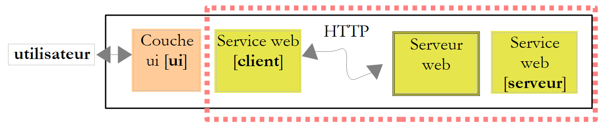
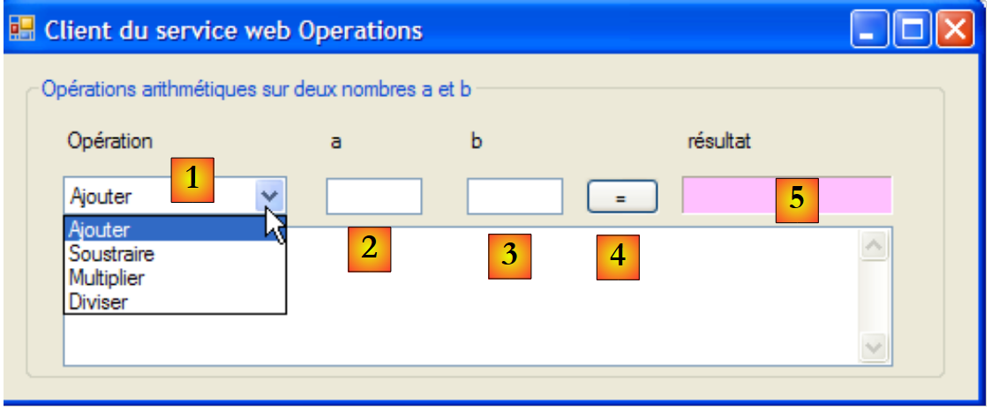
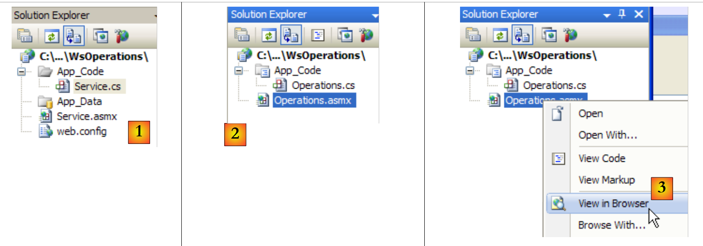
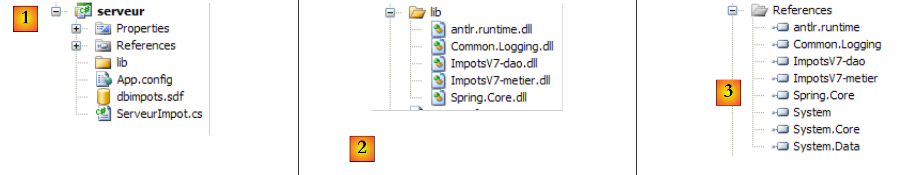
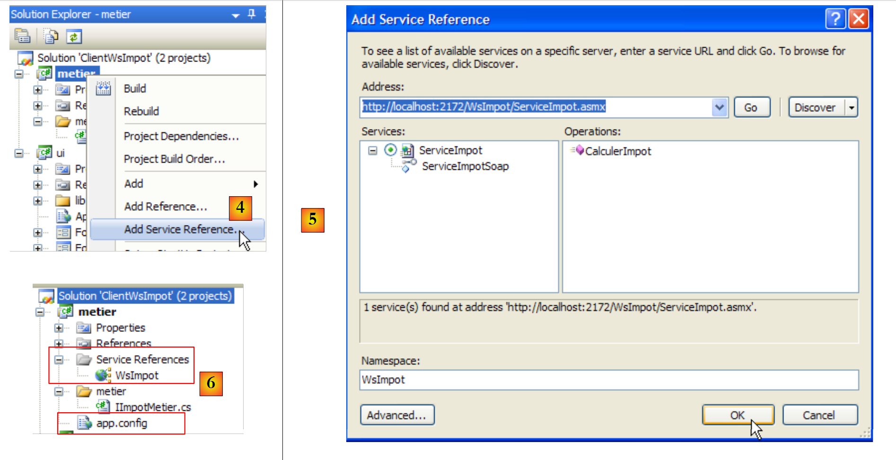
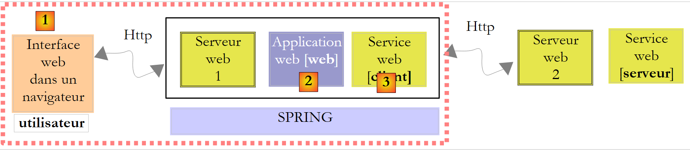
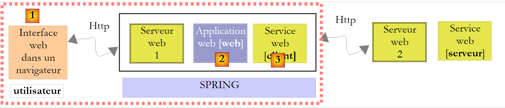

12. 服务网站
12.1. 简介
在上一章中，我们介绍了几个TCP/IP客户端-服务器应用程序。由于客户端和服务器之间交换的是文本行，因此它们可以用任何语言编写。客户端只需了解服务器所期望的对话协议即可。
Web 服务也是 TCP/IP 服务器应用程序。它们具有以下特征：
- 它们由 Web 服务器托管，其客户端-服务器交换协议是 HTTP（超文本传输协议），这是一种基于 TCP/IP 的协议。
- Web服务具有标准的对话协议，无论提供何种服务。一个Web服务提供多种服务S1、S2、...、Sn。每项服务都期望客户端提供参数，并向客户端返回结果。对于每项服务，客户端需要知道：
- 确切的部门名称（如果
- 需提供的参数列表及其类型
- 服务返回的结果类型
一旦掌握了这些要素，无论查询的是哪项 Web 服务，客户端与服务器的交互都将遵循相同的格式。这样，客户端的编写就实现了标准化。
- 出于防范互联网攻击的安全考虑，许多组织都拥有私有网络，并且仅在服务器上向互联网开放特定端口：基本上就是 Web 服务的 80 端口。所有其他端口均被锁定。如上一章所述的客户端-服务器应用程序是在私有网络（内网）中构建的，通常无法从外部访问。将服务托管在 Web 服务器上，则可使其对整个互联网社区开放。
- Web服务可以被建模为一个远程对象。所提供的服务便成为该对象的方法。客户端可以像访问本地对象一样访问这个远程对象。这隐藏了整个网络通信层，并允许您构建一个与该层无关的客户端。如果网络层发生变化，客户端无需进行修改。
- 与上一章介绍的 TCP/IP 客户端-服务器应用程序类似，客户端和服务器均可使用任何语言编写。它们通过文本行进行通信，这些文本行包含两部分：
- HTTP 协议所需的头部
- 消息正文。对于服务器向客户端的响应，其采用 XML（可扩展标记语言）格式。对于客户端向服务器的请求，消息正文可以采用多种形式，包括 XML。客户端的 XML 请求可能采用一种称为 SOAP（简单对象访问协议）的特殊格式。在这种情况下，服务器的响应也遵循 SOAP 格式。
基于 Web 服务的客户端/服务器应用程序的架构如下：
 |
这是三层架构的扩展，其中添加了专门的网络通信类。我们在第11.9.1节中已经遇到过类似的架构，即Windows图形化客户端/服务器应用程序Tcp d'impôts。
让我们通过一个初级示例来阐释这些基本概念。
12.2. 使用 Visual Web Developer 创建首个 Web 服务
我们将构建一个采用以下简化架构的第一个客户端/服务器应用程序：
 |
12.2.1. 服务器端
我们曾提到，Web 服务由 Web 服务器托管。编写 Web 服务属于服务器端 Web 编程的范畴。我们之前已经编写过 Web 客户端，这也属于 Web 编程，但属于客户端编程。Web 编程这一术语通常指服务器端编程，而非客户端编程。要开发 Web 服务或更广泛的 Web 应用程序，Visual C# 并不是合适的工具。 我们将使用 Visual Developer，这是 Visual Studio 2008 的 Express 版本之一，可从 [1] 下载 [2]：[http://msdn.microsoft.com/en-fr/express/future/bb421473(en-us).aspx]（2008 年 5 月）：
 |
- [1]: 下载地址
- [2]：下载选项卡
- [3]：下载 Visual Developer 2008
要创建一个初始 Web 服务，请在启动 Visual Developer 后按以下步骤操作：
 |
- [1]：选择“文件”/“新建网站”
- [2]：选择“ASP.NET Web 服务”
- [3]：选择开发语言：C#
- [4]：指定要创建项目的文件夹
 |
- [5]：在 Visual Web Developer 中创建的项目
- [6]：磁盘上的项目文件夹
在 Web Developer 中，Web 应用程序的结构如下：
- 一个根目录，其中包含网站文档（静态网页 HTML、图像、动态网页 .aspx、Web 服务 .asmx 等）。此外还包含 [web.config] 文件，这是 Web 应用程序的配置文件。它与 Windows 应用程序中的 [App.config] 文件作用相同，且结构也相同。
- 一个 [App_Code] 文件夹，用于存放网站中待编译的类和接口。
- 一个 [App_Data] 文件夹，用于存放 [App_Code] 类所使用的数据。例如，该文件夹可能包含一个 SQL Server *.mdf 数据库。
[Service.asmx] 即我们请求创建的 Web 服务。该文件仅包含以下一行代码：
<%@ WebService Language="C#" CodeBehind="~/App_Code/Service.cs" Class="Service" %>
上述源代码是为将托管该应用程序的 Web 服务器准备的。在生产环境中，该服务器通常是 IIS（Internet Information Server），即微软的 Web 服务器。Visual Web Developer 内置了一个轻量级 Web 服务器，供开发模式使用。上述指令告知 Web 服务器：
- [Service.asmx] 是一个 Web 服务（WebService 指令）
- 使用 C# 编写（Language 属性）
- Web 服务的 C# 代码位于 [~/App_Code/Service.cs]（CodeBehind 属性）。Web 服务器将前往此处进行编译。
- 实现 Web 服务的类名为 Service（Class 属性）
Visual Developer 生成的 Web 服务的 C# 代码 [Service.cs] 如下：
using System.Web.Services;
[WebService(Namespace = "http://tempuri.org/")]
[WebServiceBinding(ConformsTo = WsiProfiles.BasicProfile1_1)]
// To allow this Web Service to be called from script, using ASP.NET AJAX, uncomment the following line.
// [System.Web.Script.Services.ScriptService]
public class Service : System.Web.Services.WebService
{
public Service () {
//Uncomment the following line if using designed components
//InitializeComponent();
}
[WebMethod]
public string HelloWorld() {
return "Hello World";
}
}
Service 类与经典的 C# 类相似，但有几点需要注意：
- 第 7 行：该类继承自 System.Web.Services 中定义的 WebService。这种继承并非总是必需的。特别是在本示例中，可以省略这一继承。
- 第 3 行：类本身前带有 [WebService(Namespace="http://tempuri.org/")] 属性，用于为 Web 服务指定命名空间。类提供商为其类指定命名空间，旨在赋予类唯一名称，并避免与其他提供商可能具有相同名称的类发生冲突。 Web 服务也是如此。每个 Web 服务都必须通过一个唯一名称来标识，此处为 http://tempuri.org/。该名称可以是任意内容，不必是 HTTP URI。
- 第 15 行：HelloWorld 方法前带有 [WebMethod] 属性，这告诉编译器该方法必须对 Web 服务的远程客户端可见。未带有此属性的方法对 Web 服务的客户端不可见。这可能是一个仅供其他方法内部使用的方法，而非用于公开。
- 第 9 行：服务构造函数 web。在我们的应用程序中，它没有任何作用。
生成的 [Service.cs] 类被转换如下：
using System.Web.Services;
[WebService(Namespace = "http://st.istia.univ-angers.fr")]
[WebServiceBinding(ConformsTo = WsiProfiles.BasicProfile1_1)]
public class Service : System.Web.Services.WebService
{
[WebMethod]
public string DisBonjourALaDame(string nomDeLaDame) {
return string.Format("Bonjour Mme {0}", nomDeLaDame);
}
}
为该 Web 应用程序生成的配置文件 [web.config] 如下：
<?xml version="1.0"?>
<!--
Note: As an alternative to hand editing this file you can use the
web admin tool to configure settings for your application. Use
the Website->Asp.Net Configuration option in Visual Studio.
A full list of settings and comments can be found in
machine.config.comments usually located in
\Windows\Microsoft.Net\Framework\v2.x\Config
-->
<configuration>
<configSections>
<sectionGroup name="system.web.extensions" type="System.Web.Configuration.SystemWebExtensionsSectionGroup, System.Web.Extensions, Version=3.5.0.0, Culture=neutral, PublicKeyToken=31BF3856AD364E35">
...
</sectionGroup>
</configSections>
<appSettings/>
<connectionStrings/>
...
</configuration>
该文件共有 140 行。内容较为复杂，我们在此不予赘述，将保持原样。以上便是我们在 Windows 应用程序的 [App.config] 文件中遇到的 <configuration>、<configSections>、<sectionGroup>、<appSettings> 和 <connectionString> 标签。
我们有一个可运行的 Web 服务：
 |
- [1,2]：右键单击 [Service.asmx]，选择在浏览器中查看页面
- [3]：Visual Web Developer 会启动其内置 Web 服务器，并在任务栏右下角显示其图标。该 Web 服务器将通过随机端口启动，此处为 1906。显示的 URI /WsHello 即为该 Web 站点的名称 [4]。
Visual Web Developer 还启动了一个浏览器来显示所请求的页面，即 [Service.asmx]：
 |
- 在 [1] 中，该页面的 URI。我们可以看到网站 URI [http://localhost:1906/WsHello] 后面紧跟着页面 URI /Service.asmx。
- 在 [2] 中，.asmx 后缀告知 Web 服务器，这并非生成 HTML 页面的普通网页（.aspx 后缀），而是一个 Web 服务页面。随后，它会自动生成一个 Web 页面，其中包含带有 [WebMethod] 属性的每个 Web 服务方法的链接。这些链接允许您测试这些方法。
点击上方的链接 [2] 即可跳转至以下页面：
 |
- 在 [1] 中，请注意新页面的 Uri [http://localhost:1906/WsHello/Service.asmx?op=DisBonjourALaDame]。这是 Web 服务的 Uri，其中包含一个参数 op=M，其中 M 是 Web 服务方法之一的名字。
- 回顾 [DisBonjourALaDame] 方法的签名：
public string DisBonjourALaDame(string nomDeLaDame) ;
该方法接受一个字符串类型的参数，并返回一个字符串。该页面允许我们执行方法 [DisBonjourALaDame]：在 [2] 中，我们设置参数 nomDeLaDame 的值；在 [3] 中，我们请求执行该方法。我们得到以下结果：
 |
- 在 [1] 中，请注意响应中的 Uri 与请求中的并不相同。它已经发生了变化。
- 在 [2] 中，服务器返回了网页。请注意以下几点：
- 这是一个 XML 响应，而非 HTML
- [DisBonjourALaDame] 方法的结果被封装在 <string> 标签中，该标签表示其类型。
- <string> 标签有一个 xmlns（XML 命名空间）属性，即我们为 Web 服务指定的命名空间（见下文第 1 行）。
[WebService(Namespace = "http://st.istia.univ-angers.fr")]
[WebServiceBinding(ConformsTo = WsiProfiles.BasicProfile1_1)]
public class Service : System.Web.Services.WebService
要了解 Web 浏览器是如何发出请求的，请查看测试表单中的 HTML 代码：
- 第 11 行：表单值（form 标签）将通过 POST 方法（method 属性）提交至 URL [ http://localhost:1906/WsHello/Service.asmx/DisBonjourALaDame]（action 属性）。
- 第 19 行：该输入字段名为 nomDeLaDame（name 属性）。
通过调用 Web 服务 [/Service.asmx]，我们得以测试其方法，并对客户端与服务端之间的交互有了初步了解。
12.2.2. 客户部分
 |
可以使用基本的 TCP/IP 客户端来实现上述远程 Web 服务客户端。例如，以下是使用 PuTTY 客户端连接到远程 Web 服务（localhost,1906）时生成的客户端/服务器对话：
- 第1-5行：客户通过Putty发送的消息
- 第 1 行：POST 命令
- 第6-10行：服务器响应。这意味着客户端可以发送POST值。
- 第 11 行：表单中提交的参数 param1=val1¶m2=val2& .... 某些字符必须是 URL 中允许的字符。这就是我们之前所说的编码 URL。此处表单有一个名为 nomDeLaDame 的参数。提交的值总共 23 个字符。此大小必须在第 4 行的 HTTP 头部中声明。
- 第 12-22 行：服务器响应
- 第 22 行：Web [DisBonjourALaDame] 方法的结果。
使用 Visual C# 时，您可以通过向导生成远程 Web 服务的客户端。接下来我们将演示这一过程。
 |
上文中的 [1] 层由一个名为 ClientWsHello 的 Visual Studio C# 项目实现，该项目属于 Windows 应用程序类型：
 |
- 在 [1] 中，Visual C# 中的 ClientWsHello
- 在 [2] 中，该项目的默认命名空间为 Customer（右键单击项目 / 属性 / 应用程序）。该命名空间将用于构建后续生成的客户端命名空间。
- 在 [3] 中，右键单击该项目以添加对远程 Web 服务的引用
 |
- 在 [4] 中，设置之前构建的 Web 服务的 Uri
- 在 [4b] 中，将 Visual C# 连接到 [4] 指定的 Web 服务。Visual C# 将检索该 Web 服务的描述，并据此生成客户端。
- 在 [5] 中，一旦检索到 Web 服务的描述，Visual C# 即可显示其公共方法
- 在 [6] 中，为待生成的客户端指定一个命名空间。该命名空间将被添加到 [2] 中定义的命名空间中。这样，客户端的命名空间将变为 Client.WsHello。
- 通过 [6b] 验证向导。
- 在 [7] 中，对 Web 服务 WsHello 的引用已出现在项目中。此外，已创建了一个配置文件 [app.config]。
- 在 [8] 中，查看所有项目文件。
- 在 [9] 中，对 Web 服务 WsHello 的引用包含多个文件，此处不再赘述。不过，我们将重点查看 [Reference.cs] 文件，该文件是生成的客户端的 C# 代码：
namespace Client.WsHello {
...
public partial class ServiceSoapClient : System.ServiceModel.ClientBase<Client.WsHello.ServiceSoap>, Client.WsHello.ServiceSoap {
public ServiceSoapClient() {
}
...
public string DisBonjourALaDame(string nomDeLaDame) {
Client.WsHello.DisBonjourALaDameRequest inValue = new Client.WsHello.DisBonjourALaDameRequest();
inValue.Body = new Client.WsHello.DisBonjourALaDameRequestBody();
inValue.Body.nomDeLaDame = nomDeLaDame;
Client.WsHello.DisBonjourALaDameResponse retVal = ((Client.WsHello.ServiceSoap)(this)).DisBonjourALaDame(inValue);
return retVal.Body.DisBonjourALaDameResult;
}
}
}
- 第 1 行：生成的客户命名空间为 Client.WsHello。若需更改此命名空间，请在此处进行修改。
- 第 3 行：类 ServiceSoapClient 是生成的客户端类。它是一个代理类，其作用是向 Windows 应用程序隐藏正在使用远程 Web 服务这一事实。Windows 应用程序将通过本地类 Client.WsHello.ServiceSoapClient 来调用 WsHello。要创建客户端实例，请使用第 5 行中的构造函数：
- 第 8 行：方法 DisBonjourALaDame 是 Web 服务 DisBonjourALaDame 的客户端对应方法。Windows 应用程序将通过本地方法 Client.WsHello.ServiceSoapClient.DisBonjourALaDame 以如下形式调用远程方法 DisBonjourALaDame：
生成的 [app.config] 文件如下：
<?xml version="1.0" encoding="utf-8" ?>
<configuration>
<system.serviceModel>
<bindings>
....
</bindings>
<client>
<endpoint address="http://localhost:1906/WsHello/Service.asmx"... />
</client>
</system.serviceModel>
</configuration>
在此文件中，我们将仅保留第 8 行，该行包含 Web 服务的 Uri。如果该 Uri 发生变更，Windows 客户端无需重新构建。只需在 [app.config] 文件中修改 Uri 即可。
让我们回到我们要构建的 Windows 应用程序的架构：
 |
我们已经构建了 Web 服务的 [client] 层。[ui] 层将如下所示：
 |
编号 | 类型 | 名称 | 角色 |
1 | 文本框 | textBoxNomDame | 女士姓名 |
2 | 按钮 | buttonSalutations | 用于连接远程 Web 服务 WsHello 并调用方法 DisBonjourALaDame。 |
3 | 标签 | 标签Bonjour | Web 服务返回的结果 |
表单代码 [Form1.cs] 如下：
using System;
using System.Windows.Forms;
using Client.WsHello;
namespace ClientSalutations {
public partial class Form1 : Form {
public Form1() {
InitializeComponent();
}
private void buttonSalutations_Click(object sender, EventArgs e) {
// hourglass
Cursor=Cursors.WaitCursor;
// web query service
labelBonjour.Text = new ServiceSoapClient().DisBonjourALaDame(textBoxNomDame.Text.Trim());
// normal slider
Cursor = Cursors.Arrow;
}
}
}
- 第 15 行：实例化了 Web 服务客户端。其类型为 Client.WsHello.ServiceSoapClient。命名空间 Client.WsHello 在第 3 行已声明。调用了本地方法 ServiceSoapClient().DisBonjourALaDame。我们知道，该方法会查询 Web 服务中同名的远程方法。
12.3. Web 算术运算服务
我们将构建第二个客户端/服务器应用程序，其架构如下所示：
 |
之前的 Web 服务仅提供了一个方法。我们考虑构建一个提供 4 种算术运算的 Web 服务：
- ajouter(a,b)，返回 a+b
- soustraire(a,b)，返回 a-b
- multiplier(a,b)，返回 a*b
- diviser(a,b)，返回 a/b
这些操作将通过以下图形界面进行调用：
 |
- 在 [1] 中，待执行的操作
- 在[2,3]中：操作数
- 在 [4] 中，Web 服务调用按钮
- 在 [5] 中，Web 服务的结果
12.3.1. 服务器端
我们使用 Visual Web Developer 构建一个 Web 服务项目：
 |
- 在[1]中，生成的Web应用程序WsOperations
- 在 [2] 中，Web 应用程序 WsOperations 已按以下方式重新设计：
- Web 页面 [Service.asmx] 已重命名为 [Operations.asmx]
- [Service.cs] 类已重命名为 [Operations.cs]
- 已删除 [web.config] 文件，以示其并非必需。
Web 页面 [Service.asmx] 包含以下代码行：
<%@ WebService Language="C#" CodeBehind="~/App_Code/Operations.cs" Class="Operations" %>
该 Web 服务由以下类 [Operations.cs] 提供：
using System.Web.Services;
[WebService(Namespace = "http://st.istia.univ-angers.fr/")]
[WebServiceBinding(ConformsTo = WsiProfiles.BasicProfile1_1)]
public class Operations : System.Web.Services.WebService
{
[WebMethod]
public double Ajouter(double a, double b)
{
return a + b;
}
[WebMethod]
public double Soustraire(double a, double b)
{
return a - b;
}
[WebMethod]
public double Multiplier(double a, double b)
{
return a * b;
}
[WebMethod]
public double Diviser(double a, double b)
{
return a / b;
}
}
要使 Web 服务上线，我们按照 [3] 中所述的方法进行操作。随后，我们获取 Web 服务 WsOperations 中 4 个方法的测试页面：

欢迎读者亲自尝试这4个方法。
12.3.2. 客户部分
 |
使用 Visual C# 创建一个 Windows 应用程序 ClientWsOperations：
 |
- 在 [1] 中，Visual C# 中的 ClientWsOperations
- 在 [2] 中，该项目的默认命名空间为 Customer（右键单击项目 / 属性 / 应用程序）。该命名空间将用于构建后续生成的客户端命名空间。
- 在 [3] 中，右键单击项目以添加对现有 Web 服务的引用
 |
- 在 [4] 中，设置之前构建的 Web 服务的 Uri。为此，请查看显示 Web 服务测试页面的浏览器地址栏中显示的内容。
- 在 [4b] 中，将 Visual C# 连接到 [4] 指定的 Web 服务。Visual C# 将检索该 Web 服务的描述，并据此生成客户端。
- 在 [5] 中，一旦检索到 Web 服务的描述，Visual C# 即可显示其公共方法
- 在 [6] 中，为将要生成的客户端指定一个命名空间。该命名空间将被添加到 [2] 中定义的命名空间中。这样，客户端的命名空间将变为 Client.WsOperations。
- 通过 [6b] 验证向导。
- 在 [7] 中，对 Web 服务 WsOperations 的引用出现在项目中。此外，已创建了一个配置文件 [app.config]。
请注意，生成的客户端类型为 Client.WsOperations.OperationsSoapClient，其中
- Client.WsOperations 是 Web 服务客户端的命名空间
- Operations 是远程 Web 服务的类。
虽然存在一种逻辑上的方法来构造此名称，但通常在 [Reference.cs] 文件中查找会更方便，该文件默认是隐藏文件。其内容如下：
namespace Client.WsOperations {
...
public partial class OperationsSoapClient : System.ServiceModel.ClientBase<Client.WsOperations.OperationsSoap>, Client.WsOperations.OperationsSoap {
public OperationsSoapClient() {
}
...
public double Ajouter(double a, double b) {
...
}
public double Soustraire(double a, double b) {
...
}
public double Multiplier(double a, double b) {
...
}
public double Diviser(double a, double b) {
...
}
}
}
将通过类型为 Client.WsOperations.OperationsSoapClient（第 3 行）的客户端中同名的代理方法（第 8、12、16、20 行），调用远程 Web 服务的 Add、Subtract、Multiply、Divide 方法。
剩下的就是构建图形界面了：
 |
n° | 类型 | 名称 | 角色 |
1 | 下拉列表 | 下拉列表操作 | 算术运算列表 |
2 | 文本框 | textBoxA | 数字 a |
3 | 文本框 | textBoxB | 数字 b |
4 | 按钮 | buttonExecute | 轮询远程 Web 服务 |
5 | 标签 | labelResult | 操作的结果 |
[Form1.cs] 的代码如下：
using System;
using System.Windows.Forms;
using Client.WsOperations;
namespace ClientWsOperations {
public partial class Form1 : Form {
// operations table
private string[] opérations = { "Ajouter", "Soustraire", "Multiplier", "Diviser" };
// department web to contact
private OperationsSoapClient opérateur = new OperationsSoapClient();
// manufacturer
public Form1() {
InitializeComponent();
}
private void Form1_Load(object sender, EventArgs e) {
// combo filling of operations
comboBoxOperations.Items.AddRange(opérations);
comboBoxOperations.SelectedIndex = 0;
}
private void buttonExécuter_Click(object sender, EventArgs e) {
// checking operation parameters a and b
textBoxMessage.Text = "";
bool erreur = false;
Double a = 0;
if (!Double.TryParse(textBoxA.Text, out a)) {
textBoxMessage.Text += "Nombre a erroné...";
}
Double b = 0;
if (!Double.TryParse(textBoxB.Text, out b)) {
textBoxMessage.Text += String.Format("{0}Nombre b erroné...", Environment.NewLine);
}
if (erreur) {
return;
}
// operation execution
Double c=0;
try {
switch (comboBoxOperations.SelectedItem.ToString()) {
case "Ajouter":
c=opérateur.Ajouter(a, b);
break;
case "Soustraire":
c=opérateur.Soustraire(a, b);
break;
case "Multiplier":
c=opérateur.Multiplier(a, b);
break;
case "Diviser":
c=opérateur.Diviser(a, b);
break;
}
// result display
labelRésultat.Text = c.ToString();
} catch (Exception ex) {
textBoxMessage.Text = ex.Message;
}
}
}
}
- 第 3 行：远程 Web 服务客户端的命名空间
- 第 10 行：远程 Web 服务客户端与表单同时实例化
- 第 17-21 行：表单首次加载时，操作下拉列表会被填充
- 第23行：执行用户请求的操作
- 第 25-37 行：检查输入 a 和 b 是否为实数
- 第 41-54 行：使用 switch 语句执行用户请求的远程操作
- 第 43、46、49、52 行：查询本地客户端。该客户端会透明地调用远程 Web 服务。
12.4. 一个网络税费计算服务
我们再次回到那个如今已广为人知的税费计算应用程序。上次我们对其进行开发时，将其构建成了一个可通过互联网调用的远程 TCP 服务器。现在，我们已将其转变为一个 Web 服务。
第8版的架构如下：
 |
第9版的架构将与此类似：
 |
该架构与第 11.9.1 节所述的第 8 版架构相似，但其中服务器和客户端 Tcp 已被服务 Web 及其代理客户端所取代。我们将直接沿用第 8 版的 [ui]、[metier] 和 [dao] 层。
12.4.1. 服务器端
我们使用 Visual Web Developer 构建一个 Web 服务项目：
 |
- 在[1]中，生成的Web应用程序WsImport
- 在 [2] 中，Web 应用程序 WsImpot 已按以下方式重新设计：
- Web 页面 [Service.asmx] 已重命名为 [ServiceImpot.asmx]
- [Service.cs] 类已重命名为 [ServiceImpot.cs]
Web 页面 [ServiceImpot.asmx] 包含以下代码行：
<%@ WebService Language="C#" CodeBehind="~/App_Code/ServiceImpot.cs" Class="ServiceImpot" %>
该 Web 服务由以下类 [ServiceImpot.cs] 提供：
using System.Web.Services;
[WebService(Namespace = "http://st.istia.univ-angers.fr/")]
[WebServiceBinding(ConformsTo = WsiProfiles.BasicProfile1_1)]
public class ServiceImpot : System.Web.Services.WebService
{
[WebMethod]
public int CalculerImpot(bool marié, int nbEnfants, int salaire)
{
return 0;
}
}
该 Web 服务仅会在第 9 行暴露 CalculerImpot。
让我们回到第 8 版的客户端/服务器架构：
 |
服务器端 [1] 的 Visual Studio 项目如下：
 |
- 在 [1] 中，该项目包含以下组件：
- [ServeurImpot.cs]：以控制台应用程序形式实现的 TCP/IP 税务计算服务器。
- [dbimpots.sdf]：第 9.8.5 节所述的 SQL Server Compact 数据库（版本 7）。
- [App.config]：应用程序配置文件。
- 在 [2] 中，[lib] 文件夹包含该项目所需的 DLL：
- [ImpotsV7-dao]：第 7 版的 [dao] 层
- [ImpotsV7-metier]：第 7 版的 [metier] 层
- [antlr.runtime, CommonLogging, Spring.Core] 用于 Spring
- 在 [3] 中，该项目引用了
该版本的 [metier] 和 [dao] 层已存在：它们就是第 7 版和第 8 版中使用的那些。它们以 DLL 形式存在，我们按以下方式将其集成到项目中：
 |
- 在 [1] 中，已将版本 8 服务器的 [lib] 文件夹复制到版本 9 的 Web 服务项目中。
- 在 [2] 中，我们修改页面属性，将 [lib] 文件夹 [4] 中的 DLL 添加到项目引用 [3] 中。
完成此操作后，我们便拥有了下方服务器 [1] 所需的所有组件：
 |
虽然服务器组件 [1]、[server]、[metier]、[dao]、[entities]、[spring] 均已存在于 Visual Studio 项目中，但我们缺少在应用程序启动时实例化这些组件的 web 元素。在第 8 版中，一个带有静态方法 [Main] 的主类借助 Spring 完成了对各层的实例化工作。 在 Web 应用程序中，能够执行类似任务的类是与 [ Global.asax] 关联的类：
 |
- 在 [1] 中，项目 web 中新增了一个元素
- 在 [2] 中，我们选择全局应用程序类
- 在 [3] 中，系统为该元素建议的默认名称
- 在 [4] 中，我们验证了该元素的添加
- 在 [5] 中，新元素已集成到
让我们看看 [Global.asax] 文件的内容：
<%@ Application Language="C#" %>
<script runat="server">
void Application_Start(object sender, EventArgs e)
{
// Code that runs on application startup
}
void Application_End(object sender, EventArgs e)
{
// Code that runs on application shutdown
}
void Application_Error(object sender, EventArgs e)
{
// Code that runs when an unhandled error occurs
}
void Session_Start(object sender, EventArgs e)
{
// Code that runs when a new session is started
}
void Session_End(object sender, EventArgs e)
{
// Code that runs when a session ends.
}
</script>
该文件混合了 Web 服务器标签（第 1、3、30 行）和 C# 代码。这是 ASP（ASP.NET 的前身，即微软当前的 Web 编程技术）所采用的唯一方法。在 ASP.NET 中，该方法仍然可用，但并非默认方法。 默认方法是“CodeBehind”方法，我们在 Web 服务页面中已经见过，例如在 [ServiceImport.asmx] 中：
<%@ WebService Language="C#" CodeBehind="~/App_Code/ServiceImpot.cs" Class="ServiceImpot" %>
CodeBehind 指定了页面 [ServiceImpot.asmx] 的源代码位置。如果没有此属性，源代码将位于页面 [ServiceImpot.asmx] 中，其语法与 [Global.asax] 中的类似。我们不会保留生成的 [Global.asax] 文件，但其代码有助于我们理解它的用途：
- 与 Global.asax 关联的类会在应用程序启动时实例化。其生命周期与整个应用程序一致。具体来说，它仅在 Web 服务器停止时才会消失。
- 接下来将执行 Application_Start 方法。这是该方法唯一会被执行的时刻。因此，它通常用于实例化所有用户共用的对象。这些对象会被放置在：
- 或 Global.asax 关联类的静态字段中。由于该类始终存在，任何用户的请求均可从中读取信息。
- 或 Application 容器中。该容器同样在应用程序启动时创建，其生命周期与应用程序一致。
- 要将数据放入该容器，我们写 Application["key"]=value;
- 若要检索数据，则写为 T value=(T)Application["key"]; 其中 T 是值的类型。
- 每次有新用户发起请求时，都会执行 Session_Start 方法。我们如何识别新用户？每个用户（通常是浏览器）都会收到一个会话令牌，这是一个针对每个用户唯一的字符串。每次发起新请求时，用户都会将收到的会话令牌发回。这使得 Web 服务器能够识别用户。 在用户进行多次请求的过程中，与其相关的特定数据可存储在 Session 中：
- 要将数据放入该容器中，我们写 Session["key"]=value;
- 要检索数据，则写 T value=(T)Session["key"]；其中 T 是值的类型。
默认情况下，会话的生命周期限制为用户闲置 20 分钟（即用户 20 分钟内未发送回其会话令牌）。
- 当 Web 应用程序未处理的异常被发送到 Web 服务器时，将执行 Application_Error 方法。
- 其他方法则较少使用。
在介绍了这些概述之后，我们能为您做些什么呢？Global.asax？我们将使用它的 Application_Start 方法来初始化 DLL [ImpotsV7-metier、ImpotsV7-dao] 中包含的 [metier]、[dao] 和 [entites] 层。 我们将使用 Spring 来实例化它们。以此方式创建的层引用随后将存储在与 Global.asax 关联的类中的静态字段中。
第一步，我们将 Global.asax 中的 C# 代码提取到一个独立的类中。项目正在按以下方式演变：
 |
在 [1] 中，文件 [Global.asax] 将通过以下单行代码与类 [Global.cs] [2] 关联：
<%@ Application Language="C#" Inherits="WsImpot.Global"%>
Inherits="WsImpot.Global" 表示与 Global.asax 关联的类继承自 WsImpot.Global。该类在 [Global.cs] 中定义如下：
using System;
using Metier;
using Spring.Context.Support;
namespace WsImpot
{
public class Global : System.Web.HttpApplication
{
// business layer
public static IImpotMetier Metier;
// method executed at application startup
private void Application_Start(object sender, EventArgs e)
{
// instantiations [metier] and [dao] layers
Metier = ContextRegistry.GetContext().GetObject("metier") as IImpotMetier;
}
}
}
- 第 4 行：类命名空间
- 第 6 行：Global 类。您可以为其命名任意名称。关键在于它必须继承自 System.Web.HttpApplication。
- 第 9 行：一个 public static 字段，其中包含对 [业务] 层的引用。
- 第 12 行：Application_Start 方法，该方法将在应用程序启动时执行。
- 第 15 行：使用 Spring 解析 [web.config] 文件，从中查找待实例化的对象以创建 [业务] 和 [DAO] 层。在 Windows 应用程序中使用 Spring 与 [App.config]，与在 Web 应用程序中使用 Spring 与 [web.config] 并无区别。[web.config] 和 [App.config] 的结构也完全相同。 第 15 行将 [metier] 层的引用存储在第 9 行的静态字段中，以便所有用户的所有查询都能使用该引用。
[web.config] 文件内容如下：
<?xml version="1.0" encoding="utf-8" ?>
<configuration>
<configSections>
<sectionGroup name="spring">
<section name="context" type="Spring.Context.Support.ContextHandler, Spring.Core" />
<section name="objects" type="Spring.Context.Support.DefaultSectionHandler, Spring.Core" />
</sectionGroup>
</configSections>
<spring>
<context>
<resource uri="config://spring/objects" />
</context>
<objects xmlns="http://www.springframework.net">
<object name="dao" type="Dao.DataBaseImpot, ImpotsV7-dao">
<constructor-arg index="0" value="MySql.Data.MySqlClient"/>
<constructor-arg index="1" value="Server=localhost;Database=bdimpots;Uid=admimpots;Pwd=mdpimpots;"/>
<constructor-arg index="2" value="select limite, coeffr, coeffn from tranches"/>
</object>
<object name="metier" type="Metier.ImpotMetier, ImpotsV7-metier">
<constructor-arg index="0" ref="dao"/>
</object>
</objects>
</spring>
</configuration>
这是应用程序第 7 版中使用的 [App.config] 文件，并在第 9.8.4 节中进行了探讨。
- 第 16-20 行：定义了一个与 MySQL5 数据库配合使用的 [dao] 层。该数据库已在第 9.8.1 节中描述。
- 第21-23行：定义[metier]层
回到服务器谜题：
 |
在应用程序启动时，[metier] 和 [dao] 层已被实例化。这些层的生命周期与应用程序本身一致。Web 服务何时被实例化？ 每次向其发出请求时。请求结束时，处理该请求的对象会被删除。因此，乍看之下，Web 服务是无状态的。它无法在其所属的字段中存储两个请求之间的信息。它可以存储在用户的会话中。要做到这一点，它所暴露的方法必须标记为特殊的 :
[WebMethod(EnableSession=true)]
public int CalculerImpot(bool marié, int nbEnfants, int salaire)
....
上文第 1 行授权 CalculerImpot 访问我们之前提到的 Session 容器。在我们的应用程序中，我们无需使用此属性。因此，Web 服务 WsImpot 将在每次请求时被实例化，并且是无状态的。
现在我们可以编写实现该 Web 服务的代码 [ServiceImpot.cs]：
using System.Web.Services;
using WsImpot;
[WebService(Namespace = "http://st.istia.univ-angers.fr/")]
[WebServiceBinding(ConformsTo = WsiProfiles.BasicProfile1_1)]
public class ServiceImpot : System.Web.Services.WebService
{
[WebMethod]
public int CalculerImpot(bool marié, int nbEnfants, int salaire)
{
return Global.Metier.CalculerImpot(marié, nbEnfants, salaire);
}
}
- 第 10 行：唯一的 Web 服务方法
- 第 12 行：我们使用 [metier] 层的 CalculerImpot。在 Trade 类的静态字段 Global 中可以找到对该层的引用。该引用属于 WsImpot（第 2 行）。
现在我们可以启动 Web 服务了。首先需要运行 SGBD MySQL5，以便访问 bdimpots 数据库。完成此操作后，我们启动 [1] Web 服务：
 |
随后浏览器将显示页面 [2]。我们点击链接：
 |
我们为方法 CalculerImpot 的三个参数分别赋值，并请求执行该方法。我们得到以下结果，该结果是正确的：

12.4.2. 用于远程 Web 服务的 Windows 图形客户端
既然 Web 服务已经编写完成，接下来我们来探讨客户端。让我们回顾一下客户端/服务器应用程序的架构：
 |
现在我们需要编写客户端 [2]。图形界面将与第 8 版完全一致：
 |
要编写第9版的[客户端]部分，我们将以第8版的[客户端]部分为基础，然后进行必要的修改。我们将复制第11.9.4.1节中研究的Visual Studio项目，将其重命名为ClientWsImpot，并加载到Visual Studio中：
 |
版本 8 的 Visual Studio 解决方案包含 2 个项目：
- [metier] [1] 项目，它是 Tcp 税务计算服务器的 Tcp 客户端
- [ui] [2] 图形用户界面 (GUI) 项目。
需要进行的更改如下：
- [metier] 项目现在必须成为 Web 服务的调用方
- [ui] 项目必须引用新 [metier] 层的 DLL
- [App.config] 文件中的 [metier] 层配置必须进行修改。
12.4.2.1. 新的 [metier] 层
 |
- 在 [1] 中，IImpotMetier 是 [metier] 层的接口，而 ImpotMetierTcp 则是通过 [2] 中的客户 Tcp 实现的
- 在 [2] 中，我们移除了 ImpotMetierTcp。我们需要创建另一个 IImpotMetier 的实现，该实现将作为 Web 服务的客户端。
- 在 [3] 中，我们将 [metier] 项目的默认命名空间命名为 Customer。生成的 DLL 将命名为 [ImpotsV9-metier.dll]。
 |
- 在 [4] 中，我们创建对 Web 服务 WsImpot 的引用。
- 在 [5] 中，我们对其进行配置并验证。
- 在 [6] 中，已创建对 Web 服务 WsImpot 的引用，并生成了一个 [app.config] 文件。
在隐藏文件 [Reference.cs] 中：
- 命名空间是 Client.WsImpot
- 客户端类名为 ServiceImpotSoapClient
- 它有一个唯一的签名方法：
public int CalculerImpot(bool marié, int nbEnfants, int salaire) ;
接下来只需实现 IImpotMetier 接口即可：
namespace Metier {
public interface IImpotMetier {
int CalculerImpot(bool marié, int nbEnfants, int salaire);
}
}
接下来，我们使用 ImpotMetierWs 来实现它：
using System.Net.Sockets;
using System.IO;
using Client.WsImpot;
namespace Metier {
public class ImpotMetierWs : IImpotMetier {
// remote web customer service
private ServiceImpotSoapClient client = new ServiceImpotSoapClient();
// tAX CALCULATION
public int CalculerImpot(bool marié, int nbEnfants, int salaire) {
return client.CalculerImpot(marié, nbEnfants, salaire);
}
}
}
- 第 6 行：类 ImpotMetierWs 实现了 IImpotMetier 接口。
- 第 9 行：在创建 ImpotMetierWs 实例时，customer 字段被初始化为 Web 税务计算服务的客户端实例。
- 第 12 行：只需实现 IImpotMetier 接口。
- 第 13 行：我们使用远程 Web 税费计算服务客户端的 CalculerImpot 方法。最终，需要调用的是远程 Web 服务的 CalculerImpot 方法。
可以生成该项目的 DLL：
 |
- 在 [1] 中，[customer] 项目处于最终状态
- 在 [2] 中，生成该项目的 DLL
- 在 [3] 中，DLL 文件 ImpotsV9-metier.dll 位于项目的 /bin/Release 文件夹中。
12.4.2.2. 新的 [ui] 层
 |
客户端的 [client] 层已编写完成。现在我们需要编写 [ui] 层。回到 Visual Studio 项目：
 |
- 在[1]中，来自版本8的[ui]项目
- 在 [2] 中，旧 [metier] 层的 DLL ImpotsV8-metier 被新层的 DLL ImpotsV9-metier 替换
- 在 [3] 中，将 DLL ImpotsV9-metier 添加到项目引用中。
第二个变更发生在 [App.config] 中。 请注意，Spring 会使用此文件来实例化 [metier] 层。由于该层已发生变更，因此 [App.config] 的配置也必须相应调整。此外，还需配置 [App.config] 以连接远程网络税务计算服务。当添加对远程网络服务的引用时，该配置已在 [metier] 项目的 [app.config] 文件中自动生成。
因此，[App.config] 文件内容如下：
<?xml version="1.0" encoding="utf-8" ?>
<configuration>
<configSections>
<sectionGroup name="spring">
<section name="context" type="Spring.Context.Support.ContextHandler, Spring.Core" />
<section name="objects" type="Spring.Context.Support.DefaultSectionHandler, Spring.Core" />
</sectionGroup>
</configSections>
<spring>
<context>
<resource uri="config://spring/objects" />
</context>
<objects xmlns="http://www.springframework.net">
<object name="metier" type="Metier.ImpotMetierWs, ImpotsV9-metier">
</object>
</objects>
</spring>
<!-- web service -->
<system.serviceModel>
<bindings>
<basicHttpBinding>
<binding name="ServiceImpotSoap" closeTimeout="00:01:00" openTimeout="00:01:00"
receiveTimeout="00:10:00" sendTimeout="00:01:00" allowCookies="false"
bypassProxyOnLocal="false" hostNameComparisonMode="StrongWildcard"
maxBufferSize="65536" maxBufferPoolSize="524288" maxReceivedMessageSize="65536"
messageEncoding="Text" textEncoding="utf-8" transferMode="Buffered"
useDefaultWebProxy="true">
<readerQuotas maxDepth="32" maxStringContentLength="8192" maxArrayLength="16384"
maxBytesPerRead="4096" maxNameTableCharCount="16384" />
<security mode="None">
<transport clientCredentialType="None" proxyCredentialType="None"
realm="" />
<message clientCredentialType="UserName" algorithmSuite="Default" />
</security>
</binding>
</basicHttpBinding>
</bindings>
<client>
<endpoint address="http://localhost:2172/WsImpot/ServiceImpot.asmx"
binding="basicHttpBinding" bindingConfiguration="ServiceImpotSoap"
contract="WsImpot.ServiceImpotSoap" name="ServiceImpotSoap" />
</client>
</system.serviceModel>
</configuration>
- 第 15-18 行：Spring 仅实例化一个对象，即 [metier] 层
- 第 16 行：[metier] 层由类 [Metier.ImportMetierWs] 实例化，该类位于 DLL 文件 ImpotsV9-metier 中。
- 第 22-46 行：远程 Web 服务的客户端配置。这是从 [metier] 项目中的 [app.config] 文件复制粘贴的内容。
一切就绪。按 Ctrl-F5 运行应用程序（Web 服务必须已启动，MySQL5 数据库管理系统必须已启动，且上文第 42 行中的端口号必须正确）：
 |
12.5. Web 税务计算服务的 Web 客户端
让我们回到刚才编写的那款客户端/服务器应用程序的架构：
 |
上文中的 [ui] 层是由一个 Windows 图形客户端实现的。现在，我们将使用 Web 界面来实现它：
 |
这对用户来说是一个重要的变化。目前，我们的客户端/服务器应用程序（第 9 版）可以同时为多个客户端提供服务。这比第 8 版有了改进，因为第 8 版每次只能为一个客户端提供服务。 目前的限制是，希望使用网络税务计算服务的用户必须在其工作站上安装我们开发的 Windows 客户端。在即将推出的新版本（暂称为第 10 版）中，用户将能够通过浏览器访问网络税务计算服务。
在上述架构中：
- 服务器端保持不变，与第9版完全一致。
- 在客户端方面，[服务客户端 Web] 层保持不变。它已被封装在 DLL [ImpotsV9-metier] 中。我们将复用此 DLL。
- 最终，唯一的改动是将Windows图形界面替换为Web界面。
我们将深入探讨Web服务器端的编程。鉴于本文档的目的并非教授Web编程，我们将尝试阐述即将采用的方法，但不会过多深入细节。因此，本节内容会略带一些“神秘感”。不过，我们认为这一步是值得的，它展示了一个多层架构的新范例，其中其中一层发生了变更。
第 10 版的架构如下：
 |
除[web]层外，我们已具备所有层级。为更好地理解后续工作，我们需要更精确地描述客户端架构。其结构如下：
 |
- 用户 Web 在其浏览器中拥有一个 Web 表单
- 该表单被发送至 Web 1 服务器，由其通过 [web] 层进行处理
- [web]层将需要远程Web服务的客户端服务，这些服务封装在[ImpotsV9-metier.dll]中。
- 远程 Web 服务的客户端将与托管该服务的 Web 2 服务器进行通信
- 来自远程 Web 服务的响应会被传递给客户端的 Web 层，该层将其格式化为页面并发送给用户。
因此，我们的工作内容是：
- 构建用户将在浏览器中看到的 Web 表单
- 编写 Web 应用程序，该程序将处理用户的请求，并以新网页的形式发送响应。实际上，这将与表单内容相同，只是我们在其中添加了应缴税额
- 编写使所有组件协同工作的“粘合剂”。
所有这些工作都将通过使用 Visual Web Developer 创建的新网站来完成：
 |
- [1]：选择“文件”/“新建网站”
- [2]：选择“ASP.NET 网站”
- [3]：选择开发语言：C#
- [4]：指定要创建项目的文件夹
 |
- [5]：在 Visual Web Developer 中创建的项目
- [Default.aspx] 是一个名为“默认页面”的网页。当用户访问 http://.../ClientAspImpot 且未指定文档时，系统将返回此页面。该页面包含用户在浏览器中看到的税费计算表单。
- [Default.aspx.cs] 是与该页面关联的类，它将生成发送给用户的表单，并在用户填写并验证后进行处理。
- [web.config] 是应用程序配置文件。与以往不同，这次我们将保留它。
若回顾我们需要构建的架构：
 |
- [1] 将由 [Default.aspx] 实现
- [2] 将由 [Default.aspx.cs] 实现
- [3] 将由 DLL [ImpotV9-metier] 实现
让我们先从实现第 [3] 层开始。具体步骤如下：
 |
- 在 [1] 中，将 Windows 9 图形客户端的 [lib] 文件夹复制到 Web [ClientAspWsImpot] 项目文件夹中。此操作可通过 Windows 资源管理器完成。要在 Web Developer 解决方案中显示该文件夹，请点击按钮 [2] 刷新解决方案。
- 然后将它们添加到项目引用中 [3,4,5]。被引用的 DLL 文件会自动复制到项目的 /bin 文件夹中 [6]。
现在我们已拥有运行 Spring 所需的 DLL，远程 Web 服务的客户端层也已实现。尽管后者的代码已存在，但其配置工作仍有待完成。在第 9 版中，配置通过以下文件 [App.config] 进行：
<?xml version="1.0" encoding="utf-8" ?>
<configuration>
<configSections>
<sectionGroup name="spring">
<section name="context" type="Spring.Context.Support.ContextHandler, Spring.Core" />
<section name="objects" type="Spring.Context.Support.DefaultSectionHandler, Spring.Core" />
</sectionGroup>
</configSections>
<spring>
<context>
<resource uri="config://spring/objects" />
</context>
<objects xmlns="http://www.springframework.net">
<object name="metier" type="Metier.ImpotMetierWs, ImpotsV9-metier">
</object>
</objects>
</spring>
<!-- web service -->
<system.serviceModel>
<bindings>
<basicHttpBinding>
...
</basicHttpBinding>
</bindings>
<client>
<endpoint address="http://localhost:2172/WsImpot/ServiceImpot.asmx"
binding="basicHttpBinding" bindingConfiguration="ServiceImpotSoap"
contract="WsImpot.ServiceImpotSoap" name="ServiceImpotSoap" />
</client>
</system.serviceModel>
</configuration>
我们将此配置整合到 [web.config] 文件中，如下所示：
<?xml version="1.0"?>
<configuration>
<configSections>
<sectionGroup name="system.web.extensions"...>
...
</sectionGroup>
<!-- start Spring section -->
<sectionGroup name="spring">
<section name="context" type="Spring.Context.Support.ContextHandler, Spring.Core" />
<section name="objects" type="Spring.Context.Support.DefaultSectionHandler, Spring.Core" />
</sectionGroup>
<!-- end Spring section -->
</configSections>
<!-- start Spring configuration -->
<spring>
<context>
<resource uri="config://spring/objects" />
</context>
<objects xmlns="http://www.springframework.net">
<object name="metier" type="Metier.ImpotMetierWs, ImpotsV9-metier">
</object>
</objects>
</spring>
<!-- end Spring configuration -->
<!-- start remote web service client configuration -->
<system.serviceModel>
<bindings>
<basicHttpBinding>
...
</basicHttpBinding>
</bindings>
<client>
<endpoint address="http://localhost:2172/WsImpot/ServiceImpot.asmx"
binding="basicHttpBinding" bindingConfiguration="ServiceImpotSoap"
contract="WsImpot.ServiceImpotSoap" name="ServiceImpotSoap" />
</client>
</system.serviceModel>
<!-- end remote web service client configuration -->
<!-- other configurations already present in the generated web.config -->
...
</configuration>
请注意，第 37 行指的是远程 Web 服务的端口。该端口可能会发生变化，因为 Visual Developer 会在随机端口上启动 Web 服务。
让我们回到需要构建的 Web 客户端架构：
 |
- [1] 将由 [Default.aspx] 实现
- [2] 将由 [Default.aspx.cs] 实现
- [3] 已由 DLL [ImpotV9-metier] 实现
我们刚刚实现了第 [3] 层。接下来让我们转向由页面 [Default.aspx] 实现的 Web 界面 [1]。双击页面 [Default.aspx] 切换到设计模式。
 |
构建网页有两种方式：
- 如图 [2] 所示，采用图形化方式。此时您必须在 [1] 中选择 [设计] 模式。该按钮栏位于网页编辑器状态栏的底部。
- 使用标记语言，如 [3] 所示。此时您必须在 [1] 中选择 [源代码] 模式。
[设计]和[源代码]模式是双向的：在[设计]模式中进行的修改会同步反映在[源代码]模式中，反之亦然。请记住，将在浏览器中呈现的网页表单如下所示：
 |
- 在 [1] 中，浏览器中显示的表单
- [2] 处，用于构建表单的组件
- 在 [3] 中，表单设计页面。它包含以下元素：
- A 行，两个名为 RadioButtonOui 和 RadioButtonNon 的单选按钮
- B 行，一个名为 TextBoxEnfants 的输入框和一个名为 LabelErreurEnfants 的标签
- C 行，一个名为 TextBoxSalaire 的输入框和一个名为 LabelErreurSalaire 的标签
- D 行，一个名为 LabelImpot 的标签
- 第 e 行，两个名为 ButtonCalculer 和 ButtonEffacer 的按钮
将组件放置在设计区域后，即可访问其属性：
 |
- 在 [1] 中，访问组件属性
- 在 [2] 中，组件 [LabelErreurEnfants] 的属性表
- 在 [3] 中，(ID) 即为元件名称
- 在 [4] 中，我们为标签字符设置了红色。
仅仅将组件放置在表单上并设置其属性是不够的。你还需要组织它们的布局。在 Windows 图形界面中，这种布局是绝对的。只需将组件拖动到你想要的位置即可。而在网页中，情况则不同，虽然更复杂，但也更强大。本文将不涉及这一方面。
此设计生成的源代码 [Default.aspx] 如下：
<%@ Page Language="C#" AutoEventWireup="true" CodeFile="Default.aspx.cs" Inherits="_Default" %>
<!DOCTYPE html PUBLIC "-//W3C//DTD XHTML 1.0 Transitional//EN" "http://www.w3.org/TR/xhtml1/DTD/xhtml1-transitional.dtd">
<html xmlns="http://www.w3.org/1999/xhtml">
<head runat="server">
<title>Calculer votre impôt</title>
</head>
<body bgcolor="#ffff99">
<h2>
Calculer votre impôt</h2>
<form id="form1" runat="server">
<asp:ScriptManager ID="ScriptManager2" runat="server" EnablePartialRendering="true" />
<asp:UpdatePanel runat="server" ID="UpdatePanelPam">
<ContentTemplate>
<div>
</div>
<table>
<tr>
<td>
Etes-vous marié(e)
</td>
<td>
<asp:RadioButton ID="RadioButtonOui" runat="server" GroupName="statut" Text="Oui" />
<asp:RadioButton ID="RadioButtonNon" runat="server" GroupName="statut" Text="Non"
Checked="True" />
</td>
</tr>
<tr>
<td>
Nombre d'enfants
</td>
<td>
<asp:TextBox ID="TextBoxEnfants" runat="server" Columns="3"></asp:TextBox>
</td>
<td>
<asp:Label ID="LabelErreurEnfants" runat="server" ForeColor="#FF3300"></asp:Label>
</td>
</tr>
<tr>
<td>
Salaire annuel
</td>
<td>
<asp:TextBox ID="TextBoxSalaire" runat="server" Columns="8"></asp:TextBox>
</td>
<td>
<asp:Label ID="LabelErreurSalaire" runat="server" ForeColor="#FF3300"></asp:Label>
</td>
</tr>
<tr>
<td>
Impôt à payer
</td>
<td>
<asp:Label ID="LabelImpot" runat="server" BackColor="#99CCFF"></asp:Label>
</td>
</tr>
</table>
<br />
<table>
<tr>
<td>
<asp:Button ID="ButtonCalculer" runat="server" Text="Calculer" OnClick="ButtonCalculer_Click" />
</td>
<td>
<asp:Button ID="ButtonEffacer" runat="server" Text="Effacer" OnClick="ButtonEffacer_Click" />
</td>
<td>
</td>
</tr>
</table>
</div>
</ContentTemplate>
</asp:UpdatePanel>
</form>
</body>
</html>
表单组件分别位于第 23、24、33、36、44、47、55、63 和 66 行。其余部分主要是格式设置。
让我们回到需要构建的架构：
 |
- [1] 已由 [Default.aspx] 实现
- [2] 将由 [Default.aspx.cs] 实现
- [3] 已由 DLL [ImpotV9-metier] 实现
第 [1] 和 [3] 层现已实现。我们还需要编写第 [2] 层，该层负责生成表单、将其发送给用户、在用户返回已填写的表单时进行处理、使用第 [3] 层计算税款、生成 Web 响应页面并将其发回给用户。[Default.aspx.cs] 代码负责完成所有这些工作：
using System;
using WsImpot;
public partial class _Default : System.Web.UI.Page
{
protected void ButtonCalculer_Click(object sender, EventArgs e)
{
...
}
protected void ButtonEffacer_Click(object sender, EventArgs e)
{
...
}
}
该代码与经典的 Windows 窗体非常相似。这是 ASP.NET 技术的主要优势：Windows 编程模型与 Web ASP.NET 编程模型之间没有断层。只需记住下图：
 |
当用户在 [1] 处点击 [Calculate] 按钮时，将执行 [Default.aspx.cs] 第 6 行中的 ButtonCalculer_Click 过程。与此同时：
- 已填写表单的值将通过 HTTP 协议从浏览器传输至 Web 服务器
- ASP.NET 服务器将分析该请求并将其转发至 [Default.aspx] 页面
- [Default.aspx] 页面将被实例化。
- 其组件（RadioButtonOui、RadioButtonNon、TextBoxEnfants、TextBoxSalaire、LabelErreurEnfants、LabelErreurSalaire、LabelImpot）将通过一种名为“ViewState”的机制，初始化为表单最初发送至浏览器时的值。
- 提交的值将被赋给相应的组件（RadioButtonOui、RadioButtonNon、TextBoxEnfants、TextBoxSalaire）。例如，如果用户将子女数量设置为 2，则会得到 TextBoxEnfants.Text="2"。
- 如果 [Default.aspx] 页面包含 [Page_Load] 方法，该方法将被执行
- 如果点击了 [Calculate] 按钮，第 6 行中的 [ButtonCalculer_Click] 方法将被执行
- 如果点击 [Delete] 按钮，第 10 行上的 [ButtonEffacer_Click] 方法将被执行
从用户在浏览器中触发事件到该事件在 [Default.aspx.cs] 中被处理，期间涉及大量复杂的机制。这种复杂性被隐藏了起来，因此我们在网页上编写事件处理程序时，可以假装它不存在。 但我们绝不能忘记，事件与其处理程序之间存在网络传输，因此绝不能处理诸如 Mouse_Move 之类的鼠标事件——这类事件会引发耗时的客户端/服务器往返通信……
用于处理 [Calculate] 和 [Delete] 按钮点击的代码，与为传统 Windows 应用程序编写的代码并无二致：
protected void ButtonCalculer_Click(object sender, EventArgs e)
{
// data verification
int nbEnfants;
bool erreur = false;
if (!int.TryParse(TextBoxEnfants.Text.Trim(), out nbEnfants) || nbEnfants < 0)
{
LabelErreurEnfants.Text = "Valeur incorrecte...";
erreur = true;
}
int salaire;
if (!int.TryParse(TextBoxSalaire.Text.Trim(), out salaire) || salaire < 0)
{
LabelErreurSalaire.Text = "Valeur incorrecte...";
erreur = true;
}
// mistake?
if (erreur) return;
// erase any errors
LabelErreurEnfants.Text = "";
LabelErreurSalaire.Text = "";
// marital status
bool marié = RadioButtonOui.Checked;
// tAX CALCULATION
try
{
LabelImpot.Text = String.Format("{0} euros",Global.Metier.CalculerImpot(marié, nbEnfants, salaire));
}
catch (Exception ex)
{
LabelImpot.Text = ex.Message;
}
}
- 要理解这段代码，你需要知道
- 在代码执行开始时，[Default.aspx] 表单的状态与用户填写时的状态一致。这意味着字段（RadioButtonOui、RadioButtonNon、TextBoxEnfants、TextBoxSalaire）都包含用户输入的值。
- 在执行结束时，系统会自动将同一页面 [Default.aspx] 返回给用户。
因此，ButtonCalculer_Click 过程必须基于字段（RadioButtonOui、RadioButtonNon、TextBoxEnfants、TextBoxSalaire）的当前值，并设置新页面 [Default.aspx] 中所有字段（RadioButtonOui、RadioButtonNon、 TextBoxEnfants、TextBoxSalaire、LabelErreurEnfants、LabelErreurSalaire、LabelImpot）的值。
这段代码没有特别的难点。仅第27行需要说明。它使用了CalculerImpot函数中的Global.Metier字段，而该字段尚未定义。我们稍后会再回到这一点。
ButtonEffacer_Click 方法如下：
protected void ButtonEffacer_Click(object sender, EventArgs e)
{
// raz form
TextBoxEnfants.Text = "";
TextBoxSalaire.Text = "";
LabelImpot.Text = "";
LabelErreurEnfants.Text = "";
LabelErreurSalaire.Text = "";
}
让我们回到需要构建的架构：
 |
- [1] 已由 [Default.aspx] 实现
- [2] 已由 [Default.aspx.cs] 实现
- [3] 已由 DLL [ImpotV9-metier] 实现
剩下的就是为这三个层构建“粘合”机制。这些机制本质上是：
- 在应用程序启动时实例化第 [3] 层
- 在 Web 页面 [Default.aspx.cs] 每次实例化并被要求计算税款时，都能获取该引用
这并非新问题。在构建远程 Web 服务时已遇到过，并在第 12.4.1 节中进行了探讨。我们知道解决方案包括：
- 创建一个与类 [Global.cs] 关联的文件 [Global.asax]
- 在 [Global.cs] 的 Application_Start 方法中实例化第 [3] 层
- 将层 [3] 的引用放入类 [Global.cs] 的静态字段中，因为该类的生命周期与应用程序的生命周期一致。
因此，我们的 Web 项目演变如下：
 |
- 在 [1] 中，文件 [Global.asax]。
- 在 [2] 中，相关代码位于 [Global.cs] 文件中。该文件所在的 [App_Code] 文件夹在 Web 解决方案中默认并不存在。请使用 [3] 创建该文件夹。
Global.asax 文件内容如下：
<%@ Application Language="C#" Inherits="WsImpot.Global"%>
[Global.cs] 代码如下：
using System;
using Metier;
using Spring.Context.Support;
namespace WsImpot
{
public class Global : System.Web.HttpApplication
{
// business layer
public static IImpotMetier Metier;
// method executed at application startup
private void Application_Start(object sender, EventArgs e)
{
// instantiations [metier] and [dao] layers
Metier = ContextRegistry.GetContext().GetObject("metier") as IImpotMetier;
}
}
}
- 第 6 行：该类名为 Global，属于 WsImpot（第 4 行）。其全名为 WsImpot.Global，必须将此名称包含在 Global.asax 的 Inherits 语句中。
- 第 6 行：我们知道与 Global.asax 关联的类必须继承自 System.Web.HttpApplication。
- 第 12 行：Application_Start 方法在 Web 应用程序启动时执行。
- 第 15 行：我们使用 Spring 集成 [业务] 层（正在构建的应用程序的第 [3] 层），并在 [web.config] 中进行如下配置：
<!-- objets Spring -->
<spring>
<context>
<resource uri="config://spring/objects" />
</context>
<objects xmlns="http://www.springframework.net">
<object name="metier" type="Metier.ImpotMetierWS, ImpotsV9-metier">
</object>
</objects>
</spring>
上文第 (g) 行中的类 [Metier.ImpotMetierWS] 位于 [ImpotsV9-metier.dll] 中。
创建的 [metier] 层的引用被输入到第 9 行的静态字段中。该字段在 ButtonCalculer_Click 的第 27 行中被使用：
LabelImpot.Text = String.Format("{0} euros",Global.Metier.CalculerImpot(marié, nbEnfants, salaire));
现在可以进行测试了。我们需要启动 MySQL5 数据库管理系统和远程 Web 服务，并记下其运行的端口：
 |
完成上述操作后，请检查 Web 客户端的 [web.config] 文件中，远程 Web 服务的端口是否正确：
 |
完成上述操作后，按 Ctrl-F5 即可启动远程 Web 服务的 Web 客户端：
 |
12.6. Web 税务计算服务的 Java 控制台客户端
为了演示Web服务可以被任何语言编写的客户端访问，我们将编写一个基本的Java控制台客户端。该客户端/服务器应用程序的架构如下：
 |
- 客户端 [1] 将使用 Java 编写
- 服务器 [2] 由 C# 编写
首先，我们将修改 Web 税费计算服务中的一个细节。该服务在 [ServiceImpot.cs] 中的当前定义如下：
...
public class ServiceImpot : System.Web.Services.WebService
{
[WebMethod]
public int CalculerImpot(bool marié, int nbEnfants, int salaire)
{
return Global.Metier.CalculerImpot(marié, nbEnfants, salaire);
}
}
测试表明，第 6 行和第 8 行中对 married 参数的强调可能会对 Java/C# 互操作性造成问题。我们采用以下新定义：
...
public class ServiceImpot : System.Web.Services.WebService
{
[WebMethod]
public int CalculerImpot(bool marie, int nbEnfants, int salaire)
{
return Global.Metier.CalculerImpot(marie, nbEnfants, salaire);
}
}
该服务将放置在一个名为 WsImpotsSansAccents 的新 Web 开发项目中。该 Web 服务的 URL 将为 [/WsImpotSansAccents/ServiceImpot.asmx]。

编写 Java 客户端时，我们将使用 NetBeans IDE [http://www.netbeans.org/]：
 |
- 在 [1] 中，创建一个新项目
- 在 [2,3] 中，选择 Java 类型的 Java 应用程序项目。
- 在 [4] 中，进入下一步
- 在 [5] 中，为项目命名
- 在 [6] 中，指定将在此处创建一个与项目同名的子文件夹的目录
- 在 [7] 中，为将在应用程序启动时执行的主类命名
- 在 [8] 中，完成
 |
- 在 [9] 中：生成的 Java 项目
- 在 [10] 中：右键单击该项目以生成 Web 税费计算服务客户端
 |
- 在 [11] 中，描述 Web 税费计算服务的文件的 URL：
http://localhost:1089/WsImpotSansAccents/ServiceImpot.asmx?WSDL
该 URL 指向 [ServiceImport.asmx] 服务，我们在其后添加了 ?WSDL 参数。位于此 URL 下的文档使用 XML 语言描述了该服务 [15] 的功能。这是 Web 服务的一个标准组成部分。
- 在 [12] 中，指定用于放置待生成类的包（相当于 C# 命名空间）
- 在 [13] 中，保留默认值
- 在 [14] 中，填写
 |
- 在 [16] 中，导入的 Web 服务已集成到 Java 项目中。它支持 Soap 和 Soap12 两种通信协议。
- 在 [17] 中，[Main] 类，我们将在此类中使用生成的客户端
 |
- 在[18]中，我们将向[main]方法中插入一些代码。将光标定位到需要插入代码的位置，右键单击并选择选项[19]
- 在[20]中，指定要为远程税务计算服务的CalculerImpot生成调用代码，然后点击“确定”。
在 [Main] 中生成的代码如下：
生成的代码展示了如何调用远程税费计算服务的 CalculerImple.Calculate。如果将其与我们在 C# 中所见的内容进行类比，第 7 行中的 port 变量就相当于 C# 中使用的客户端。我们不再对这段代码进行进一步说明。我们将按以下方式对其进行重构：
- 第 1 行：我们导入 ServiceImpot，它代表向导生成的客户端。
- 第 6 行：我们按照 main 中生成的代码中指定的步骤，调用远程方法 CalculerImpot。
运行时（F6）在控制台中获得的结果如下：